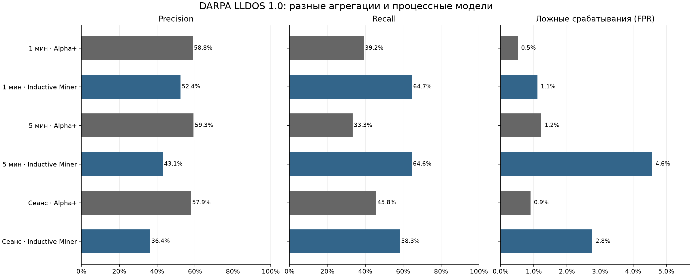

Агрегация сетевых событий и процессная диагностика аномалий
1. Цель и постановка эксперимента
Цель — установить, как правило формирования трасс влияет на качество процессной модели и обнаружение эпизодов известной атаки. Рассматривается LLDOS 1.0 DARPA 2000. Сравниваются Alpha+ и Inductive Miner.
Проверяются три вопроса: насколько сеть воспроизводит наблюдённый фон; позволяет ли несоответствие сети различать фон и размеченные атаки; какие конкретные расхождения можно локализовать на сети Петри.
2. Исходные данные и эталонная разметка
Используется полный файл сетевого трафика Inside сценария LLDOS 1.0 набора DARPA 2000: inside_full.dump.gz. Исходные данные представлены записью пакетов в формате PCAP. Запись каждого пакета содержит временную метку и байты сетевого кадра. Из кадров извлекаются IP-адреса отправителя и получателя, протокол TCP, UDP или ICMP, а для TCP и UDP — номера портов. Наблюдение охватывает фоновую сетевую активность и эпизоды известной атаки.
Дополнительно используются пять файлов phase-1-dump — phase-5-dump, содержащих пакеты отдельных фаз атаки. Пакеты этих файлов сопоставляются с полной записью по временной метке и байтам кадра. Признак attack присваивается событию при наличии в нём размеченного пакета и трассе при наличии такого события. Обозначение background_reference соответствует отсутствию совпадения с этой разметкой.
Журнал для Process Mining формируется при подготовке данных. Пакеты объединяются в события сетевого обмена по правилу раздела 3. Одно такое событие представляет группу пакетов между двумя конечными точками за ограниченный интервал времени. Для события сохраняются начало и конец, адреса, протокол, порты, число пакетов и объём данных. Указанное в таблице число событий относится к результату этой группировки. Затем события объединяются в трассы выбранным методом агрегации.
def fingerprint(ts, frame):
"""Сопоставить пакет с разметкой по точному времени и сохранённым байтам."""
return hashlib.sha256(struct.pack(">Q", ts) + frame).digest()
def read_attack_labels():
"""Построить индекс точных отпечатков пяти официальных файлов разметки."""
labels = defaultdict(set)
counts = Counter()
for phase in range(1, 6):
for _, timestamp, frame in packets(RAW / f"phase-{phase}-dump"):
labels[fingerprint(timestamp, frame)].add(phase)
counts[phase] += 1
return labels, counts
3. Построение событий и агрегация
Подготовка журнала включает объединение пакетов в события сетевого обмена, сопоставление событий сетевым узлам и формирование трасс. Пакеты TCP и UDP группируются по транспортному протоколу и неупорядоченной паре конечных точек IP:port. Для ICMP используются адреса и идентификатор echo-сообщения либо тип сообщения. Новое событие формируется, если интервал с предыдущим пакетом превышает 60 с или время от начала группы достигает 300 с. Сохраняются временные границы, количество и суммарный объём пакетов.
Метод
Ключ case
Границы
Фиксированное окно 1 мин
узел + floor(t / 60 с)
границы Unix-времени
Фиксированное окно 5 мин
узел + floor(t / 300 с)
границы Unix-времени
Сеанс активности
узел + номер сеанса
пауза >30 с либо начало очередного события сетевого обмена ≥300 с от начала сеанса
Действие состоит из направления IN/OUT/SELF и категории: TCP WEB, MAIL, REMOTE, FILE, RPC, OTHER; UDP DNS, RPC, OTHER; ICMP.
Код агрегации
def add_event(case, event, activity, membership):
"""Свернуть соседний повтор, сохранив его принадлежность исходному шагу."""
case["end_us"] = max(case["end_us"], event["end_us"])
case["event_ids"].append(event["event_id"])
case["raw_steps"] += 1
case["packets"] += event["packets"]
case["attack_events"] += bool(event["attack_packets"])
if event["phases"]:
case["phases"].update(event["phases"].split(";"))
if not case["actions"] or case["actions"][-1] != activity:
case["actions"].append(activity)
membership.append(
{
"case_id": case["case_id"],
"step": len(case["actions"]),
"event_id": event["event_id"],
"activity": activity,
}
)
def make_cases(projected, rule, source):
"""Правило case использует только узел и время, без attack-меток."""
cases = {}
membership = []
for host, entity_events in sorted(projected.items()):
entity_events.sort(key=lambda pair: (pair[0]["start_us"], pair[0]["event_id"]))
session = 0
session_start = None
previous_end = None
for event, activity in entity_events:
if rule == "host_session_30s":
new_session = (
session_start is None
or event["start_us"] - previous_end > 30_000_000
or event["start_us"] - session_start >= 300_000_000
)
if new_session:
session += 1
session_start = event["start_us"]
bucket = session
previous_end = max(previous_end or event["end_us"], event["end_us"])
else:
seconds = 60 if rule == "host_60s" else 300
bucket = event["start_us"] // (seconds * 1_000_000)
case_id = f"{host}|{bucket}"
case = cases.setdefault(
case_id,
{
"case_id": case_id,
"host": host,
"start_us": event["start_us"],
"end_us": event["end_us"],
"event_ids": [],
"actions": [],
"attack_events": 0,
"phases": set(),
"raw_steps": 0,
"packets": 0,
},
)
add_event(case, event, activity, membership)
rows = list(cases.values())
for case in rows:
case["split"] = partition(
case["start_us"],
case["end_us"],
source["train_end_us"],
source["calibration_end_us"],
)
case["reference_label"] = (
"attack" if case["attack_events"] else "background_reference"
)
case["phases"] = sorted(case["phases"])
return rows, membership
def project_to_entities(events):
"""Сохранить все события, включая внешнюю цель и широковещательный трафик."""
projected = defaultdict(list)
for event in events:
hosts = {ip for ip in (event["src"], event["dst"]) if internal(ip)}
if not hosts:
hosts = {event["dst"]}
for host in hosts:
if event["src"] == event["dst"]:
direction = "SELF"
else:
direction = "OUT" if host == event["src"] else "IN"
activity = direction + "_" + event["service"]
projected[host].append((event, activity))
return projected
4. Протокол обучения и проверки
Первые 60% интервала до первого размеченного пакета отведены обучению, следующие 20% — калибровке. Проверочная выборка начинается с оставшихся 20% предатакового интервала и продолжается до конца. Модели строятся только на train, пороги — только на calibration.
Граница
Время
Конец train
07.03.2000 09:39:36
Начало test
07.03.2000 09:45:36
Первый размеченный пакет
07.03.2000 09:51:36
Агрегация
Всего
Train
Calibration
Test
Boundary
Attack test
Фон test
Одношаговые
Узел × 1 минута
3112
258
68
2753
33
51
2702
1895
Узел × 5 минут
1078
91
14
944
29
48
896
490
Сеансы активности узла
2044
163
40
1819
22
48
1771
1235
Пересекающие границу cases сохраняются как boundary и не участвуют в метриках. Пересечение исходных event_id между train, calibration и test отсутствует. При разных агрегациях меняются единица оценки и число положительных объектов; прямое сравнение процентов требует учёта этих различий.
def partition(start, end, train_end, calibration_end):
"""Не включать пересекающий границу объект сразу в два раздела."""
if end < train_end:
return "train"
if start >= train_end and end < calibration_end:
return "calibration"
if start >= calibration_end:
return "test"
return "boundary"
5. Обучение и качество процессных моделей
Используется PM4Py 2.7.23.8. Alpha+ вызывается как ALPHA_VERSION_PLUS. Inductive Miner представлен одной моделью для каждой агрегации. Значение noise_threshold выбирается по train и calibration из сетки [0, 0.05, 0.10, 0.15, 0.20, 0.25, 0.30, 0.40, 0.50].
Fitness характеризует воспроизведение журнала. ETConformance precision оценивает допуск дополнительного поведения по префиксам train и является отдельной характеристикой модели. Для сетей с train fitness ниже 0.95 эта оценка не интерпретируется. Использована реализация PM4Py ETCONFORMANCE_TOKEN, поэтому значение зависит от поведения replay.
Выбор noise_threshold
Кандидат допускается к выбору при среднем скорректированном fitness не ниже 0.95 на train и 0.90 на calibration. Скорректированное соответствие равно f × (1 − u/n): отсутствующие в модели действия не считаются полностью соответствующими.
Среди допустимых кандидатов максимизируется гармоническое среднее:
Q = 3 / (1/F_train + 1/F_calibration + 1/P_train)
где P_train — ETConformance precision. При равенстве Q предпочтение отдаётся меньшему числу дуг, затем меньшему порогу шума.
def log_for(sequences):
"""Создать журнал PM4Py из последовательностей названий действий."""
from pm4py.objects.log.obj import EventLog, Trace, Event
return EventLog([Trace([Event({"concept:name": a}) for a in seq]) for seq in sequences])
def discover_model(training_cases, miner, rule=None):
"""Обучить сеть только на последовательностях обучающего раздела."""
import pm4py
from pm4py.algo.discovery.alpha import algorithm as alpha
training_log = log_for(case["actions"] for case in training_cases)
if miner == "alpha_plus":
# Alpha+ изменяет вход: каждый запуск получает отдельный объект log.
return alpha.apply(training_log, variant=alpha.Variants.ALPHA_VERSION_PLUS)
selection = json.loads((RESULTS / "tuning/selection.json").read_text("utf-8"))
noise_threshold = selection["selected"][rule]["noise_threshold"]
return pm4py.discover_petri_net_inductive(training_log, noise_threshold=noise_threshold)
def corrected_fitness(cases, net, initial, final):
"""Не считать неизвестные модели действия полностью соответствующими."""
visible = {t.label for t in net.transitions if t.label is not None}
checks = replay.apply(
log_for(c["actions"] for c in cases),
net,
initial,
final,
parameters={
"show_progress_bar": False,
"consider_remaining_in_fitness": True,
"consider_activities_not_in_model_in_fitness": True,
},
)
values = []
for case, check in zip(cases, checks):
unknown = sum(action not in visible for action in case["actions"])
values.append(float(check["trace_fitness"]) * (1 - unknown / len(case["actions"])))
return sum(values) / len(values)
def harmonic(values):
return len(values) / sum(1 / value for value in values) if all(values) else 0
def worker(rule):
# Test не включается даже в последовательности для подбора.
cases = load_json(ROOT / "data/prepared" / rule / "cases.json")
train = [c for c in cases if c["split"] == "train"]
calibration = [c for c in cases if c["split"] == "calibration"]
results = []
for noise in GRID:
net, initial, final = pm4py.discover_petri_net_inductive(
log_for(c["actions"] for c in train), noise_threshold=noise
)
train_fitness = corrected_fitness(train, net, initial, final)
calibration_fitness = corrected_fitness(calibration, net, initial, final)
model_precision = float(
precision.apply(
log_for(c["actions"] for c in train),
net,
initial,
final,
variant=precision.Variants.ETCONFORMANCE_TOKEN,
parameters={"show_progress_bar": False},
)
)
quality = harmonic((train_fitness, calibration_fitness, model_precision))
results.append(
{
"aggregation": rule,
"noise_threshold": noise,
"train_corrected_fitness": train_fitness,
"calibration_corrected_fitness": calibration_fitness,
"et_precision_train": model_precision,
"quality": quality,
"eligible": train_fitness >= 0.95 and calibration_fitness >= 0.90,
"places": len(net.places),
"transitions": len(net.transitions),
"arcs": len(net.arcs),
"train_cases": len(train),
"calibration_cases": len(calibration),
"multi_step_train_fraction": sum(len(c["actions"]) >= 2 for c in train)
/ len(train),
}
)
print(rule, noise, round(quality, 4), results[-1]["eligible"], flush=True)
save_json(ROOT / "results/tuning" / f"{rule}.json", results)
def worker(rule, miner):
folder = ROOT / "results" / rule / miner
result = load_json(folder / "result.json")
# Precision имеет смысл совместно с fitness. На не воспроизводящем train
# Alpha+ её значение могло бы создавать ложное впечатление качества.
if result["train"]["mean_fitness"] < 0.95:
value = {"status": "not_interpreted", "reason": "train_fitness_below_0.95"}
else:
net, initial, final = pm4py.read_pnml(str(folder / "model.pnml"))
cases = load_json(ROOT / "data/prepared" / rule / "cases.json")
log = log_for(c["actions"] for c in cases if c["split"] == "train")
started = time.monotonic()
measured = precision.apply(
log,
net,
initial,
final,
variant=precision.Variants.ETCONFORMANCE_TOKEN,
parameters={"show_progress_bar": False},
)
value = {
"status": "complete",
"etconformance_precision_train": float(measured),
"seconds": time.monotonic() - started,
"method": "PM4Py ETCONFORMANCE_TOKEN; estimate based on replayed prefixes",
}
save_json(folder / "quality.json", value)
6. Правило детекции и результаты
Основная оценка определена как s = 1 − f × (1 − u / n), где f — token fitness, u — число шагов с метками вне модели, n — длина свёрнутой трассы. Штраф за неизвестные метки введён явно, поскольку числовой token fitness не всегда учитывает их.
Порог определяется отдельно для каждой пары «агрегация — модель» по оценкам calibration. При используемом объёме калибровочных выборок эмпирический 99-й процентиль совпадает с максимальной оценкой s на calibration. Срабатывание на проверочной трассе регистрируется при строгом превышении этого порога.
Интерпретация показателей
Единицей оценки является трасса. Положительный класс attack означает наличие хотя бы одного размеченного события атаки; background_reference — отсутствие такого события по использованной разметке.
Показатель
Определение и интерпретация
TP
Трассы attack, на которых детектор сработал.
FP
Трассы background_reference, на которых детектор сработал.
FN
Трассы attack без срабатывания детектора.
TN
Трассы background_reference без срабатывания детектора.
Качество ранжирования по score: вероятность более высокой оценки у случайной трассы attack по сравнению с фоновой; равные оценки учитываются с весом 0.5. Значение 0.5 соответствует случайному ранжированию, 1 — полному разделению.
AP
Average precision: сумма precision на последовательных порогах, взвешенная по приросту recall. Показывает концентрацию трасс attack в верхней части ранжированного списка; зависит от доли положительного класса.
Агрегация
Модель
Порог
TP
FP
FN
TN
Accuracy
Bal. accuracy
Precision
Recall
FPR
F1
AUROC
AP
Узел × 1 минута
Alpha+
0.8474
20
14
31
2688
98.4%
69.3%
58.8%
39.2%
0.5%
47.1%
0.876
0.333
Узел × 1 минута
Inductive Miner
0.2201
33
30
18
2672
98.3%
81.8%
52.4%
64.7%
1.1%
57.9%
0.890
0.522
Узел × 5 минут
Alpha+
0.8363
16
11
32
885
95.4%
66.1%
59.3%
33.3%
1.2%
42.7%
0.764
0.357
Узел × 5 минут
Inductive Miner
0.1053
31
41
17
855
93.9%
80.0%
43.1%
64.6%
4.6%
51.7%
0.901
0.575
Сеансы активности узла
Alpha+
0.8083
22
16
26
1755
97.7%
72.5%
57.9%
45.8%
0.9%
51.2%
0.845
0.349
Сеансы активности узла
Inductive Miner
0.2000
28
49
20
1722
96.2%
77.8%
36.4%
58.3%
2.8%
44.8%
0.893
0.526

Рисунок 1. Precision, recall и FPR при порогах, заданных на calibration. Доверительные интервалы не приведены, поскольку трассы одного сценария не являются независимыми повторениями.
Агрегация
Модель
Фаза 1
Фаза 2
Фаза 3
Фаза 4
Фаза 5
Узел × 1 минута
Alpha+
12/20
5/13
2/4
0/3
1/11
Узел × 1 минута
Inductive Miner
16/20
11/13
3/4
1/3
2/11
Узел × 5 минут
Alpha+
8/20
4/13
3/4
0/3
1/8
Узел × 5 минут
Inductive Miner
16/20
11/13
3/4
0/3
1/8
Сеансы активности узла
Alpha+
11/20
5/12
3/3
1/3
2/10
Сеансы активности узла
Inductive Miner
15/20
9/12
3/3
0/3
1/10
Для каждой фазы показано выявлено / число содержащих её cases. Один case может включать несколько фаз, поэтому столбцы не суммируются.
Код conformance checking, оценки аномальности и порога
def worker(rule, miner):
"""Обучить одну сеть на train и проверить все три раздела журнала."""
import pm4py
from pm4py.algo.discovery.alpha import algorithm as alpha
from pm4py.algo.conformance.tokenreplay import algorithm as replay
started = time.monotonic()
folder = RESULTS / rule / miner
folder.mkdir(parents=True, exist_ok=True)
cases = json.loads((DATA / rule / "cases.json").read_text("utf-8"))
train = [c for c in cases if c["split"] == "train"]
calibration = [c for c in cases if c["split"] == "calibration"]
test = [c for c in cases if c["split"] == "test"]
if not train or not calibration or (not test):
raise ValueError("Empty partition")
net, im, fm = discover_model(train, miner, rule)
valid = (
bool(im)
and bool(fm)
and set(im).issubset(net.places)
and set(fm).issubset(net.places)
)
structure = {
"places": len(net.places),
"transitions": len(net.transitions),
"hidden": sum((t.label is None for t in net.transitions)),
"arcs": len(net.arcs),
"isolated_visible": sum(
(
t.label is not None and (not t.in_arcs or not t.out_arcs)
for t in net.transitions
)
),
"valid_markings": valid,
}
dump(
folder / "markings.json",
{
"initial": [
{"place": str(p.name), "tokens": n, "in_net": p in net.places}
for p, n in im.items()
],
"final": [
{"place": str(p.name), "tokens": n, "in_net": p in net.places}
for p, n in fm.items()
],
},
)
if not valid:
dump(
folder / "result.json",
{
"rule": rule,
"miner": miner,
"status": "invalid_marking",
"structure": structure,
},
)
return
for i, p in enumerate(sorted(net.places, key=lambda p: (str(p.name), id(p)))):
p.name = f"p{i}"
pm4py.write_pnml(net, im, fm, str(folder / "model.pnml"))
imported = pm4py.read_pnml(str(folder / "model.pnml"))
assert len(imported[0].places) == len(net.places) and len(imported[0].arcs) == len(
net.arcs
)
net, im, fm = imported
try:
pm4py.save_vis_petri_net(net, im, fm, str(folder / "model.svg"), rankdir="LR")
except Exception as error:
(folder / "render_error.txt").write_text(str(error), "utf-8")
visible = {t.label for t in net.transitions if t.label is not None}
variants = list(
dict.fromkeys((tuple(c["actions"]) for c in train + calibration + test))
)
checks = replay.apply(
log_for(variants),
net,
im,
fm,
parameters={
"show_progress_bar": False,
"consider_remaining_in_fitness": True,
"consider_activities_not_in_model_in_fitness": True,
},
)
diagnostics = {}
for index, (seq, check) in enumerate(zip(variants, checks)):
unknown = sum((a not in visible for a in seq))
fitness = min(1.0, max(0.0, float(check["trace_fitness"])))
score = 1 - fitness * (1 - unknown / len(seq))
diagnostics[seq] = {
"token_fitness": fitness,
"score": score,
"unknown_activities": unknown,
"missing_tokens": int(check["missing_tokens"]),
"remaining_tokens": int(check["remaining_tokens"]),
"exact_accept": exact_accept(seq, net, im, fm),
}
if index and index % 200 == 0:
print(f"{rule}/{miner}: {index}/{len(variants)} variants", flush=True)
val_scores = sorted((diagnostics[tuple(c["actions"])]["score"] for c in calibration))
threshold = val_scores[max(0, math.ceil(0.99 * len(val_scores)) - 1)]
rows = []
for c in train + calibration + test:
d = diagnostics[tuple(c["actions"])]
rows.append(
{
"case_id": c["case_id"],
"host": c["host"],
"split": c["split"],
"actual_attack": bool(c["attack_events"]),
"steps": len(c["actions"]),
"events": len(c["event_ids"]),
"attack_events": c["attack_events"],
"phases": ";".join(c["phases"]),
"actions": " > ".join(c["actions"]),
**d,
"threshold": threshold,
"predicted_attack": d["score"] > threshold + 1e-12,
}
)
test_rows = [r for r in rows if r["split"] == "test"]
result = {
"rule": rule,
"miner": miner,
"status": "complete",
"pm4py": pm4py.__version__,
"structure": structure,
"threshold": threshold,
"threshold_rule": "score > calibration empirical 99th percentile",
"train": metrics([r for r in rows if r["split"] == "train"]),
"calibration": metrics([r for r in rows if r["split"] == "calibration"]),
"test": metrics(test_rows),
"variants": len(variants),
"seconds": time.monotonic() - started,
"per_phase": {
str(p): {
"attack_cases": sum((str(p) in r["phases"].split(";") for r in test_rows)),
"detected_cases": sum(
(
str(p) in r["phases"].split(";") and r["predicted_attack"]
for r in test_rows
)
),
}
for p in range(1, 6)
},
"internal_test": metrics([r for r in test_rows if r["host"].startswith("172.16.")]),
"external_anchor_test": metrics(
[r for r in test_rows if not r["host"].startswith("172.16.")]
),
}
csv_save(folder / "trace_diagnostics.csv", rows)
examples = []
for outcome in ("TP", "FP", "FN", "TN"):
group = [
r
for r in test_rows
if ("T" if r["actual_attack"] == r["predicted_attack"] else "F")
+ ("P" if r["predicted_attack"] else "N")
== outcome
]
examples.extend(
(
{"outcome": outcome, **r}
for r in sorted(group, key=lambda r: r["score"], reverse=True)[:3]
)
)
dump(folder / "examples.json", examples)
dump(folder / "result.json", result)
print(
json.dumps(
{"rule": rule, "miner": miner, "threshold": threshold, "test": result["test"]},
ensure_ascii=False,
),
flush=True,
)
def exact_accept(sequence, net, initial, final, seconds=0.15):
"""Никаких добавленных токенов. Таймаут/лимит — unknown, а не отклонение."""
from pm4py.objects.petri_net import semantics
deadline = time.monotonic() + seconds
hidden = [t for t in net.transitions if t.label is None]
visible = defaultdict(list)
for t in net.transitions:
if t.label is not None:
visible[t.label].append(t)
cache = {}
def closure(marking):
if marking in cache:
return cache[marking]
found = {marking}
todo = [marking]
while todo:
if time.monotonic() > deadline or len(found) > 1000:
raise TimeoutError
state = todo.pop()
for t in hidden:
if semantics.is_enabled(t, net, state):
following = semantics.execute(t, net, state)
if following not in found:
found.add(following)
todo.append(following)
cache[marking] = found
return found
try:
states = closure(initial)
for a in sequence:
if time.monotonic() > deadline:
raise TimeoutError
following = set()
for m in states:
for t in visible[a]:
if semantics.is_enabled(t, net, m):
following.update(closure(semantics.execute(t, net, m)))
states = following
if not states:
return False
return final in states
except TimeoutError:
return None
def auc_metrics(rows):
"""AUROC и average precision с корректной обработкой одинаковых scores."""
positives = sum((r["actual_attack"] for r in rows))
negatives = len(rows) - positives
if not positives or not negatives:
return (None, None)
groups = defaultdict(lambda: [0, 0])
for r in rows:
groups[r["score"]][0 if r["actual_attack"] else 1] += 1
wins = 0.0
lower_negative = 0
for score, (p, n) in sorted(groups.items()):
wins += p * (lower_negative + 0.5 * n)
lower_negative += n
ap = 0.0
tp = 0
seen = 0
for score, (p, n) in sorted(groups.items(), reverse=True):
tp += p
seen += p + n
ap += p / positives * (tp / seen)
return (wins / (positives * negatives), ap)
def metrics(rows):
"""Рассчитать метрики классификации и соответствия; неизвестные значения не заменять нулём."""
counts = Counter(
(
(
("TP" if r["actual_attack"] else "FP")
if r["predicted_attack"]
else "FN" if r["actual_attack"] else "TN"
)
for r in rows
)
)
tp, fp, fn, tn = [counts[k] for k in ("TP", "FP", "FN", "TN")]
divide = lambda a, b: a / b if b else None
auc, ap = auc_metrics(rows)
recall = divide(tp, tp + fn)
specificity = divide(tn, tn + fp)
balanced = (
(recall + specificity) / 2
if recall is not None and specificity is not None
else None
)
return {
"cases": len(rows),
"TP": tp,
"FP": fp,
"FN": fn,
"TN": tn,
"accuracy": divide(tp + tn, len(rows)),
"balanced_accuracy": balanced,
"precision": divide(tp, tp + fp),
"recall": recall,
"fpr": divide(fp, fp + tn),
"f1": divide(2 * tp, 2 * tp + fp + fn),
"auroc": auc,
"average_precision": ap,
"mean_fitness": sum(r["token_fitness"] for r in rows) / len(rows) if rows else None,
"strict_accepted": sum(r["exact_accept"] is True for r in rows),
"strict_rejected": sum(r["exact_accept"] is False for r in rows),
"strict_unknown": sum(r["exact_accept"] is None for r in rows),
}
7. Контроль вклада новых действий
Дополнительно рассчитаны три score: только доля неизвестных модели действий; доля действий вне словаря train; только 1−fitness. Каждый контроль имеет собственный порог по calibration. Это позволяет проверить, связано ли обнаружение преимущественно с новыми действиями.
Агрегация
Модель
Основной: recall / FPR
Вне модели: recall / FPR
Вне train: recall / FPR
1−fitness: recall / FPR
Узел × 1 минута
Alpha+
39.2% / 0.5%
70.6% / 0.5%
70.6% / 0.5%
35.3% / 0.4%
Узел × 1 минута
Inductive Miner
64.7% / 1.1%
70.6% / 0.5%
70.6% / 0.5%
11.8% / 0.7%
Узел × 5 минут
Alpha+
33.3% / 1.2%
77.1% / 1.2%
77.1% / 1.2%
25.0% / 0.9%
Узел × 5 минут
Inductive Miner
64.6% / 4.6%
77.1% / 1.2%
77.1% / 1.2%
6.2% / 3.5%
Сеансы активности узла
Alpha+
45.8% / 0.9%
75.0% / 0.6%
75.0% / 0.6%
37.5% / 0.7%
Сеансы активности узла
Inductive Miner
58.3% / 2.8%
75.0% / 0.6%
75.0% / 0.6%
6.2% / 2.3%
Интерпретация контрольных результатов
Во всех трёх агрегациях контроль меток вне train обеспечивает больший recall и меньший FPR, чем основное правило Inductive Miner. Контроли «вне модели» и «вне train» дают одинаковые результаты. Следовательно, новизна меток является основным выявленным признаком обнаружения; добавление fitness не улучшило эти показатели. Самостоятельный вклад порядка событий по результатам контрольных проверок не установлен.
def main():
summary = json.loads((ROOT / "results/summary.json").read_text("utf-8"))
output = []
for model in summary:
if model["status"] != "complete":
continue
folder = ROOT / "results" / model["rule"] / model["miner"]
with (folder / "trace_diagnostics.csv").open(encoding="utf-8-sig") as f:
rows = list(csv.DictReader(f))
for r in rows:
for k in ("actual_attack", "predicted_attack"):
r[k] = r[k] == "True"
for k in ("score", "token_fitness"):
r[k] = float(r[k])
for k in ("unknown_activities", "steps"):
r[k] = int(r[k])
r["exact_accept"] = {"True": True, "False": False, "": None}[r["exact_accept"]]
variants = {}
train_vocabulary = {
a for r in rows if r["split"] == "train" for a in r["actions"].split(" > ")
}
for name, score_fn in [
("unknown_only", lambda r: r["unknown_activities"] / r["steps"]),
(
"train_unknown",
lambda r: sum(
(a not in train_vocabulary for a in r["actions"].split(" > "))
)
/ r["steps"],
),
("token_only", lambda r: 1 - r["token_fitness"]),
]:
calibration = sorted((score_fn(r) for r in rows if r["split"] == "calibration"))
threshold = calibration[max(0, math.ceil(0.99 * len(calibration)) - 1)]
test = [
{
**r,
"score": score_fn(r),
"predicted_attack": score_fn(r) > threshold + 1e-12,
}
for r in rows
if r["split"] == "test"
]
variants[name] = {"threshold": threshold, **metrics(test)}
output.append(
{
"aggregation": model["rule"],
"miner": model["miner"],
"score_type": name,
**variants[name],
}
)
variants["known_actions_only"] = metrics(
[r for r in rows if r["split"] == "test" and r["unknown_activities"] == 0]
)
variants["detected_attacks_with_unknown"] = sum(
(
r["split"] == "test"
and r["actual_attack"]
and r["predicted_attack"]
and (r["unknown_activities"] > 0)
for r in rows
)
)
model["controls"] = variants
dump(folder / "result.json", model)
dump(ROOT / "results/summary.json", summary)
csv_save(ROOT / "results/controls.csv", output)
8. Объяснение отдельных трасс через сеть Петри
В этом разделе разобраны шесть проверочных трасс: обнаруженные атаки, пропуски и результаты на фоне. Для каждой трассы сопоставлены эталонная разметка, решение детектора и конкретные расхождения с сетью Петри.
Почему выбрана эта модель и как выполнено сопоставление
Обоснование выбора модели и агрегации
Для 6 иллюстраций выбрана модель Inductive Miner с noise_threshold=0.10 и агрегацией «Узел × 5 минут». Выбор опирается на train и calibration.
Для объяснения последовательности необходимы достаточное соответствие фону, ограничивающая способность сети и многошаговые трассы. Поэтому для каждой агрегации рассчитан E = Q × d, где d — доля многошаговых трасс в train.
Агрегация
Q
Многошаговые train
E
Дуги
Узел × 1 минута
0.887
39.1%
0.347
64
Узел × 5 минут
0.811
54.9%
0.446
60
Сеансы активности узла
0.862
37.4%
0.323
126
Максимальное E=0.446 получено для «Узел × 5 минут»: доля многошаговых трасс составляет 54.9%, скорректированный fitness на calibration — 0.988, ET precision — 0.600.
Сопоставление называется выравниванием. Оно показывает, какие действия журнала можно выполнить в сети, какие остаются без соответствующего перехода и какие шаги модели требуются дополнительно. Поиск Дейкстры выполняется по парам «позиция в трассе, маркировка». Совпадение и скрытый переход имеют стоимость 0, шаг только журнала или видимый шаг только модели — 1. Выбирается минимальная стоимость, затем минимальное число шагов. Лимиты: 15 секунд и 100 000 состояний на трассу.
Как читать разбор
Выберите пример, сопоставьте его оценку с порогом, затем изучите выделенные расхождения. Выбор строки шага показывает состояние сети перед этим шагом.
Совпадение: действие журнала выполняется разрешённым переходом сети — зелёный.
Только журнал: действие обрабатывается без перехода сети; токены не перемещаются — красный.
Только модель: выполняется видимый переход без соответствующей записи журнала — жёлтый.
Скрытый шаг τ: внутренний переход без наблюдаемого действия. Числа в кружках — токены; синий контур выделяет выбранный переход.
1. Обнаружение: неизвестная метка
Эталонная разметкаТрасса с атакой
Решение детектораСрабатывание · TP
Оценка s > порога0.4074 > 0.1053
Наблюдаемая последовательность
IN_ICMP → IN_UDP_OTHER → IN_TCP_OTHER
Интерпретация результата
В трассе присутствует метка, отсутствующая среди переходов модели. Она увеличивает оценку отклонения. В выбранном выравнивании действия, которые не удалось сопоставить переходам, показаны как шаги только журнала. Разметка атаки и срабатывание детектора согласуются.
Расхождения и положение в сети
Совпадений — 1; шагов только журнала — 2; видимых шагов только модели — 0.
Пошаговое сопоставление журнала с моделью
Одна строка — один шаг выравнивания: сопоставление наблюдаемого действия с переходом сети.
Одинаковые метки в двух последних столбцах означают совпадение. Прочерк в столбце модели — действие журнала без перехода сети; прочерк в столбце журнала — переход модели без наблюдаемого действия. Строка τ обозначает внутренний переход. Выбор строки показывает маркировку перед соответствующим шагом.
Все метки действий известны модели, однако наблюдаемая последовательность не воспроизводится без расхождений. Снижение fitness приводит к срабатыванию. Этот пример иллюстрирует обнаружение без неизвестных меток; конкретные несовпадения перечислены в таблице шагов.
Расхождения и положение в сети
Совпадений — 26; шагов только журнала — 33; видимых шагов только модели — 0.
Пошаговое сопоставление журнала с моделью
Одна строка — один шаг выравнивания: сопоставление наблюдаемого действия с переходом сети.
Одинаковые метки в двух последних столбцах означают совпадение. Прочерк в столбце модели — действие журнала без перехода сети; прочерк в столбце журнала — переход модели без наблюдаемого действия. Строка τ обозначает внутренний переход. Выбор строки показывает маркировку перед соответствующим шагом.
Расхождения с сетью присутствуют, но оценка не превышает установленный порог. Поэтому детектор пропускает размеченную трассу атаки. Причина пропуска в этом примере связана с правилом принятия решения: ненулевое отклонение оказалось недостаточным для срабатывания.
Расхождения и положение в сети
Совпадений — 2; шагов только журнала — 2; видимых шагов только модели — 0.
Пошаговое сопоставление журнала с моделью
Одна строка — один шаг выравнивания: сопоставление наблюдаемого действия с переходом сети.
Одинаковые метки в двух последних столбцах означают совпадение. Прочерк в столбце модели — действие журнала без перехода сети; прочерк в столбце журнала — переход модели без наблюдаемого действия. Строка τ обозначает внутренний переход. Выбор строки показывает маркировку перед соответствующим шагом.
Трасса содержит размеченное событие атаки, но её последовательность полностью допускается сетью. Отклонение равно нулю. Используемые категории действий и структура модели не отделяют этот случай от допустимого поведения.
Расхождения и положение в сети
Совпадений — 1; шагов только журнала — 0; видимых шагов только модели — 0.
Расхождений нет. В таблице показаны совпадающие действия.
Пошаговое сопоставление журнала с моделью
Одна строка — один шаг выравнивания: сопоставление наблюдаемого действия с переходом сети.
Одинаковые метки в двух последних столбцах означают совпадение. Прочерк в столбце модели — действие журнала без перехода сети; прочерк в столбце журнала — переход модели без наблюдаемого действия. Строка τ обозначает внутренний переход. Выбор строки показывает маркировку перед соответствующим шагом.
Оценка превышает порог из-за расхождения последовательности с моделью. При этом трасса не содержит событий опубликованной разметки атаки. Результат учитывается как фоновое срабатывание: процессное отклонение само по себе не устанавливает наличие атаки.
Расхождения и положение в сети
Совпадений — 1; шагов только журнала — 1; видимых шагов только модели — 0.
Пошаговое сопоставление журнала с моделью
Одна строка — один шаг выравнивания: сопоставление наблюдаемого действия с переходом сети.
Одинаковые метки в двух последних столбцах означают совпадение. Прочерк в столбце модели — действие журнала без перехода сети; прочерк в столбце журнала — переход модели без наблюдаемого действия. Строка τ обозначает внутренний переход. Выбор строки показывает маркировку перед соответствующим шагом.
Фоновая трасса полностью воспроизводится сетью. Наблюдаемые действия сопоставлены переходам без видимых исправлений; оценка отклонения равна нулю. Детектор не срабатывает, что согласуется с эталонной разметкой.
Расхождения и положение в сети
Совпадений — 3; шагов только журнала — 0; видимых шагов только модели — 0.
Расхождений нет. В таблице показаны совпадающие действия.
Пошаговое сопоставление журнала с моделью
Одна строка — один шаг выравнивания: сопоставление наблюдаемого действия с переходом сети.
Одинаковые метки в двух последних столбцах означают совпадение. Прочерк в столбце модели — действие журнала без перехода сети; прочерк в столбце журнала — переход модели без наблюдаемого действия. Строка τ обозначает внутренний переход. Выбор строки показывает маркировку перед соответствующим шагом.
def shortest_alignment(actions, net, initial, final, timeout=15, max_states=100000):
"""Dijkstra: sync/tau стоят 0, log/model-only стоят 1. При лимите — unknown.
Состояние — позиция в трассе и маркировка. Второй критерий минимизирует
число шагов среди решений с одинаковой стоимостью отклонений.
"""
places = sorted(net.places, key=lambda p: p.name)
transitions = sorted(net.transitions, key=lambda t: (t.label or "", t.name))
encode = lambda marking: tuple(marking.get(p, 0) for p in places)
decode = lambda values: pm4py.objects.petri_net.obj.Marking(
{p: n for p, n in zip(places, values) if n}
)
initial_state = (0, encode(initial))
target = (len(actions), encode(final))
best = {initial_state: (0, 0)}
previous = {}
serial = itertools.count()
queue = [(0, 0, next(serial), initial_state)]
deadline = time.monotonic() + timeout
def offer(state, following, kind, transition, log_action, cost):
edits, steps = best[state]
value = (edits + cost, steps + 1)
if following not in best or value < best[following]:
best[following] = value
previous[following] = (state, kind, transition, log_action)
heapq.heappush(queue, (*value, next(serial), following))
while queue:
if time.monotonic() > deadline or len(best) > max_states:
return {"status": "unknown", "visited_states": len(best), "moves": []}
edits, steps, _, state = heapq.heappop(queue)
if best[state] != (edits, steps):
continue
if state == target:
path = []
current = state
while current != initial_state:
prior, kind, transition, log_action = previous[current]
path.append(
{
"kind": kind,
"transition": transition.name if transition else None,
"model_action": transition.label if transition else None,
"log_action": log_action,
"position": prior[0],
"before": {p.name: n for p, n in zip(places, prior[1]) if n},
"after": {p.name: n for p, n in zip(places, current[1]) if n},
}
)
current = prior
path.reverse()
return {
"status": "complete",
"cost": edits,
"visited_states": len(best),
"moves": path,
}
position, values = state
marking = decode(values)
if position < len(actions):
offer(state, (position + 1, values), "log", None, actions[position], 1)
for transition in transitions:
if not semantics.is_enabled(transition, net, marking):
continue
following = semantics.execute(transition, net, marking)
if transition.label is None:
offer(state, (position, encode(following)), "tau", transition, None, 0)
else:
offer(state, (position, encode(following)), "model", transition, None, 1)
if position < len(actions) and transition.label == actions[position]:
offer(
state,
(position + 1, encode(following)),
"sync",
transition,
actions[position],
0,
)
return {"status": "no_path", "moves": [], "visited_states": len(best)}
def validate_alignment(actions, alignment, net, initial, final):
"""Независимо исполнить путь PM4Py-семантикой и проверить исходную трассу."""
if alignment["status"] != "complete":
return False
transition_by_name = {t.name: t for t in net.transitions}
marking = initial.copy()
observed = []
cost = 0
for move in alignment["moves"]:
assert {p.name: n for p, n in marking.items() if n} == move["before"]
if move["kind"] in ("sync", "log"):
observed.append(move["log_action"])
if move["kind"] != "log":
transition = transition_by_name[move["transition"]]
assert semantics.is_enabled(transition, net, marking)
marking = semantics.execute(transition, net, marking)
cost += move["kind"] in ("log", "model")
assert {p.name: n for p, n in marking.items() if n} == move["after"]
assert observed == actions
assert marking == final
assert cost == alignment["cost"]
return True
9. Реализация и воспроизводимость
Полный конвейер запускается одной командой из итоговой папки:
./run.ps1
Файл
Назначение
tune_inductive.py
Подбор noise_threshold и выбор модели для объяснений без test
read_data.py
Чтение PCAP, присоединение разметки и построение событий сетевого обмена
aggregate.py
Определение case, проекции на узлы и сохранение членства
train_models.py
Обучение сетей только на train и расчёт trace-level диагностики
conformance.py
Точная проверка исполнения с явно заданными лимитами
metrics.py
Метрики классификации и обработка одинаковых scores
model_quality.py
Оценка ETConformance precision на train
explain.py
Минимальное выравнивание, проверка пути и аннотированные сети
def packets(path):
"""Последовательно прочитать каждый пакет classic PCAP, включая полный gzip-файл."""
opener = gzip.open if path.suffix == ".gz" else open
with opener(path, "rb") as source:
header = source.read(24)
if header[:4] not in (b"\xa1\xb2\xc3\xd4", b"\xd4\xc3\xb2\xa1"):
raise ValueError("Not classic microsecond PCAP")
endian = ">" if header[0] == 161 else "<"
linktype = struct.unpack(endian + "I", header[20:24])[0]
if linktype not in (1, 19):
raise ValueError(f"Unexpected link type {linktype}")
number = 0
while record := source.read(16):
if len(record) != 16:
raise ValueError("Truncated packet header")
sec, usec, captured, original = struct.unpack(endian + "IIII", record)
frame = source.read(captured)
if len(frame) != captured or captured > original:
raise ValueError("Truncated packet")
number += 1
yield (number, sec * 1000000 + usec, frame)
def add_packet(active, events, timestamp, frame, decoded, phases):
"""Связать пакет с двунаправленным разговором и сохранить его статистики."""
src, dst, sport, dport, protocol = decoded
endpoints = sorted(((src, sport), (dst, dport)))
key = (protocol, *endpoints)
event = active.get(key)
new_block = (
event is None
or timestamp - event["end_us"] > 60_000_000
or timestamp - event["start_us"] >= 300_000_000
)
if new_block:
event = {
"event_id": f"f{len(events) + 1:07d}",
"start_us": timestamp,
"end_us": timestamp,
"src": src,
"dst": dst,
"sport": sport,
"dport": dport,
"protocol": protocol,
"service": service(protocol, sport, dport),
"packets": 0,
"bytes": 0,
"attack_packets": 0,
"phases": set(),
}
events.append(event)
active[key] = event
event["end_us"] = max(event["end_us"], timestamp)
event["packets"] += 1
event["bytes"] += len(frame)
event["attack_packets"] += bool(phases)
event["phases"].update(phases)
return event["event_id"]
Обучение моделей
def discover_model(training_cases, miner, rule=None):
"""Обучить сеть только на последовательностях обучающего раздела."""
import pm4py
from pm4py.algo.discovery.alpha import algorithm as alpha
training_log = log_for(case["actions"] for case in training_cases)
if miner == "alpha_plus":
# Alpha+ изменяет вход: каждый запуск получает отдельный объект log.
return alpha.apply(training_log, variant=alpha.Variants.ALPHA_VERSION_PLUS)
selection = json.loads((RESULTS / "tuning/selection.json").read_text("utf-8"))
noise_threshold = selection["selected"][rule]["noise_threshold"]
return pm4py.discover_petri_net_inductive(training_log, noise_threshold=noise_threshold)
Метрики
def metrics(rows):
"""Рассчитать метрики классификации и соответствия; неизвестные значения не заменять нулём."""
counts = Counter(
(
(
("TP" if r["actual_attack"] else "FP")
if r["predicted_attack"]
else "FN" if r["actual_attack"] else "TN"
)
for r in rows
)
)
tp, fp, fn, tn = [counts[k] for k in ("TP", "FP", "FN", "TN")]
divide = lambda a, b: a / b if b else None
auc, ap = auc_metrics(rows)
recall = divide(tp, tp + fn)
specificity = divide(tn, tn + fp)
balanced = (
(recall + specificity) / 2
if recall is not None and specificity is not None
else None
)
return {
"cases": len(rows),
"TP": tp,
"FP": fp,
"FN": fn,
"TN": tn,
"accuracy": divide(tp + tn, len(rows)),
"balanced_accuracy": balanced,
"precision": divide(tp, tp + fp),
"recall": recall,
"fpr": divide(fp, fp + tn),
"f1": divide(2 * tp, 2 * tp + fp + fn),
"auroc": auc,
"average_precision": ap,
"mean_fitness": sum(r["token_fitness"] for r in rows) / len(rows) if rows else None,
"strict_accepted": sum(r["exact_accept"] is True for r in rows),
"strict_rejected": sum(r["exact_accept"] is False for r in rows),
"strict_unknown": sum(r["exact_accept"] is None for r in rows),
}
Проверка объяснения
def validate_alignment(actions, alignment, net, initial, final):
"""Независимо исполнить путь PM4Py-семантикой и проверить исходную трассу."""
if alignment["status"] != "complete":
return False
transition_by_name = {t.name: t for t in net.transitions}
marking = initial.copy()
observed = []
cost = 0
for move in alignment["moves"]:
assert {p.name: n for p, n in marking.items() if n} == move["before"]
if move["kind"] in ("sync", "log"):
observed.append(move["log_action"])
if move["kind"] != "log":
transition = transition_by_name[move["transition"]]
assert semantics.is_enabled(transition, net, marking)
marking = semantics.execute(transition, net, marking)
cost += move["kind"] in ("log", "model")
assert {p.name: n for p, n in marking.items() if n} == move["after"]
assert observed == actions
assert marking == final
assert cost == alignment["cost"]
return True
На полном журнале Inside сценария DARPA 2000 LLDOS 1.0 установлена зависимость числа и состава трасс от правила агрегации. Минутные окна сформировали 3112 трасс, пятиминутные — 1078, сеансы активности — 2044. Число одношаговых трасс составило 1895, 490 и 1235 соответственно. Изменение агрегации меняет единицу оценки, поэтому межвариантные различия метрик относятся к соответствующим наборам трасс.
Средний train fitness сетей Alpha+ находится в диапазоне 0.382–0.452, что указывает на недостаточное воспроизведение обучающего фона. Для выбранных Inductive Miner этот диапазон составляет 0.974–0.978. По заданному критерию подбора noise_threshold выбраны значения 0.10 для минутных и пятиминутных окон и 0.15 для сеансов активности.
Среди шести основных вариантов наибольшая F1 получена для Inductive Miner с агрегацией «Узел × 1 минута»: F1 57.9%, precision 52.4%, recall 64.7% и FPR 1.1%. Во всех агрегациях Inductive Miner обеспечивает больший recall, чем Alpha+, при более высокой доле фоновых срабатываний.
Контроль наличия меток вне train обнаруживает 36 из 51 трассы attack для минутных окон, 37 из 48 для пятиминутных и 36 из 48 для сеансов. Соответствующий FPR составляет 0.52%, 1.23% и 0.62%. Во всех трёх случаях этот контроль превосходит основное правило Inductive Miner одновременно по recall и FPR. Преимущество объединённой оценки процессного несоответствия над простым признаком новизны меток в данном эксперименте не подтверждено.
Выравнивания выбранных test-трасс локализуют шаги только журнала и только модели. Разбор выявил как пропуск трассы с ненулевым отклонением ниже порога, так и пропуск размеченной трассы, полностью допускаемой сетью. Также зафиксировано отклонение на фоновой трассе, приводящее к срабатыванию. Следовательно, процессная допустимость и наличие метки атаки не совпадают в используемом представлении событий.